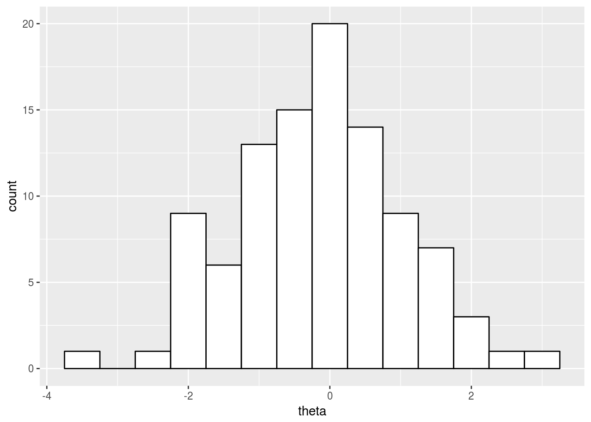
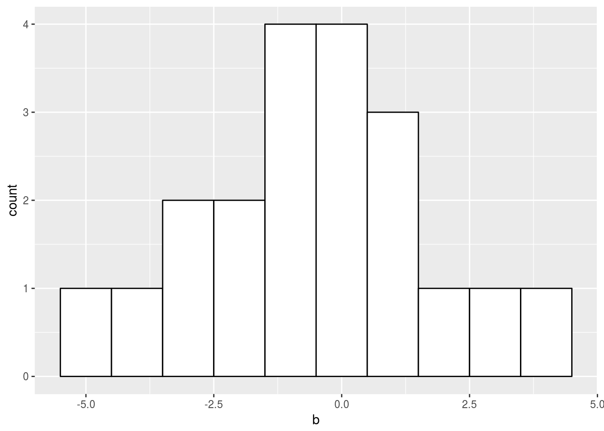
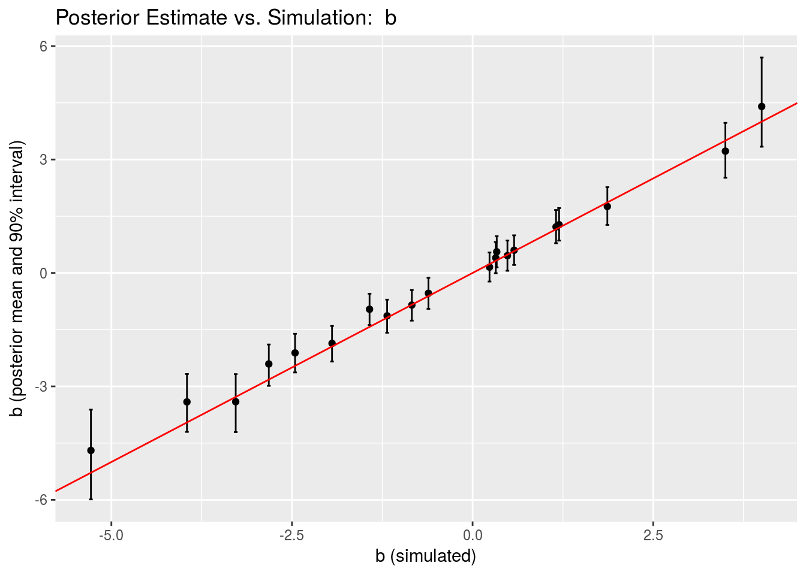
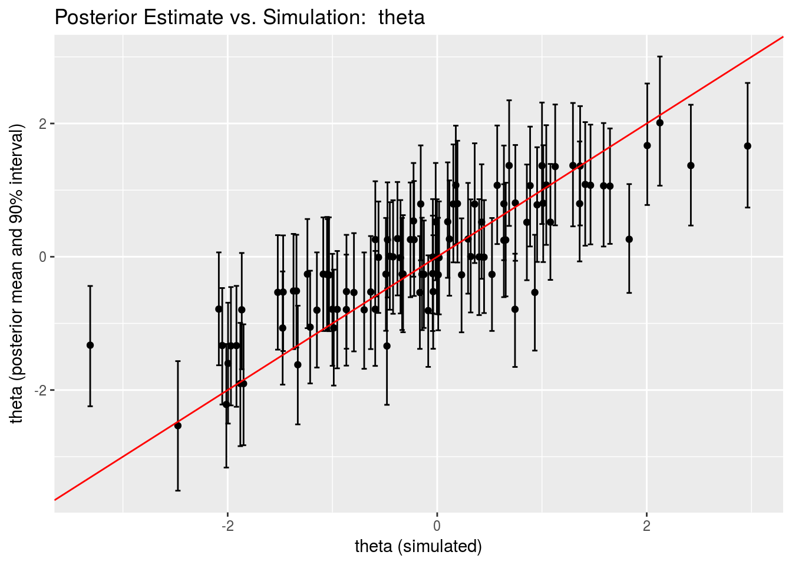
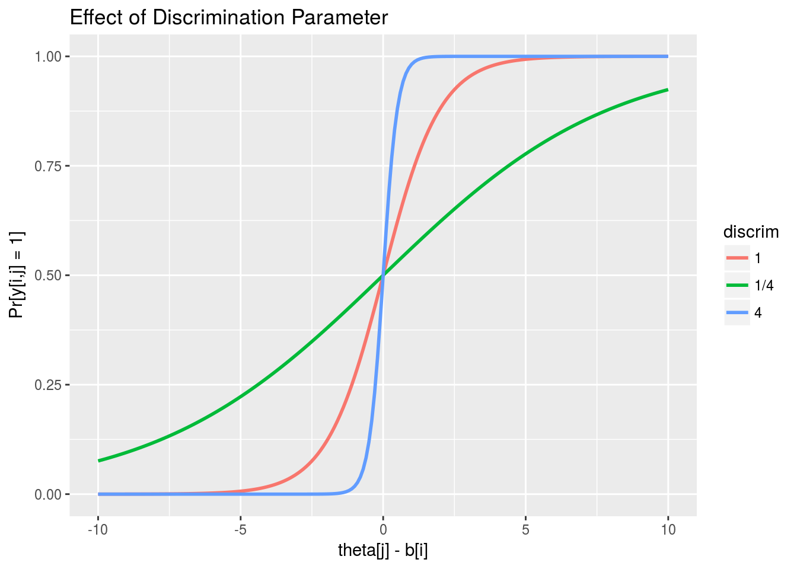
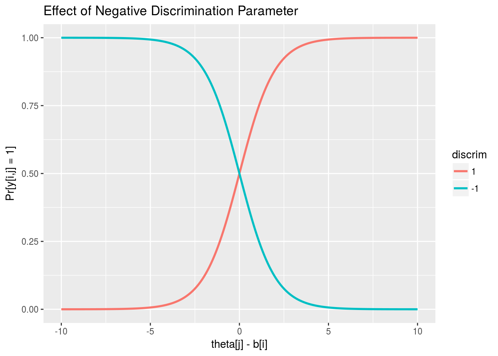
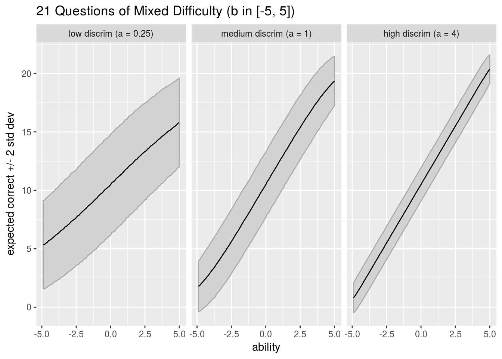
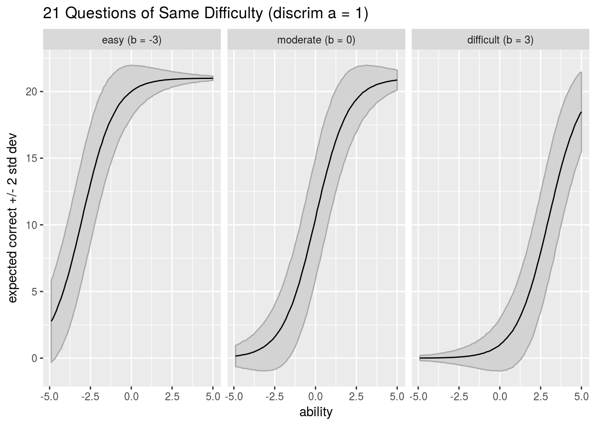

Item-response theory (IRT) is a model of educational testing that assigns each student an ability value and each question on a test a difficulty level (and optionally discimrinativeness among students).
To ensure the experiments are reproducible, all seeds are being set explicitly. These can be changed to explore variation in results with different randomizations.
set.seed(3874656474);In the simplest form, the data for an IRT model consists of
The simplest form of IRT model is based on an ability parameter for students and a difficulty parameter for questions.
This form of IRT is called “one parameter logistic” (1PL) because there is a single parameter for each test question and because the logistic link function will be used.
The likelihood function uses the inverse of the logistic link function,
\[ \mbox{logit}^{-1}(u) = \frac{1}{1 + \exp(-u)}, \]
to convert the parameters into a probability that a given question is answered correctly by a given student,
\[ \mbox{Pr}[y_{i,j} = 1] = \mbox{logit}^{-1}(\theta_j - b_i) \]
Expressed using sampling notation, the likelihood is
\[ y_{i,j} \sim \mbox{Bernoulli}\left(\mbox{logit}^{-1}(\theta_j - b_i)\right) \]
Under the assumption that the data are independent and identically distributed (i.i.d.), the full likelihood function is
\[ p(y \ | \ \theta,b) = \prod_{i=1}^I \prod_{j=1}^J \mbox{Bernoulli}\left(y_{i,j} \, | \, \mbox{logit}^{-1}(\theta_j - b_i)\right) \]
The prior on \(\theta\) and \(b\) is going to be an independent fixed normal prior on both coefficient vectors. The student abilities will be given a unit normal prior \[
\theta_j \sim \mbox{Normal}(0, 1)
\] and the difficulties a prior centering the mean accuracy at around 73% accuracy (1 on the logit scale).
\[
b_i \sim \mbox{Normal}(0, 2);
\]
In later sections we consider the issues of separability that arise in any logistic regression and the additive invariance that leads to non-identifiability when trying to define a maximum likelihood estimate for IRT models. We will also consider our preferred resolution to both problems, a centered hierarchical prior for the abilities \(\theta\) and a free hierarchical prior on the problem difficulties.
The joint probability function is given by the prior times the likelihood, \[ p(\theta, b, y) = p(\theta) \, p(b) \, p(y \, | \, \theta, b), \] and by Bayes’s rule, this is proportional to the posterior \[ p(\theta, b \, | \, y) \propto p(\theta) \, p(b) \, p(y \, | \, \theta, b). \] Stan models typically define log joint probability functions
The 1PL IRT model may be reformulated as a traditional binary logistic regression with an \(I + J\) coefficient vector \(\beta = (\theta,b)\) and for each outcome \(y_{i,j}\) an \((I+J)\)-dimensional predictor vector \(x_{i,j}\) where \(x_{i,j,i} = 1\), \(x_{i,j, I + j} = 1\) and all other coefficients are zero. Then
\[ \mbox{Pr}[y_{i,j} = 1] = \mbox{logit}^{-1}(\beta^{\top} x_{i,j}) = \mbox{logit}^{-1}\left( \sum_{k=1}^{I+J} \beta_k x_{i,j,k} \right) \]
To simulate the data using R, the model is simply evaluated in the forward direction from the priors. Thus the model is known in advance to be well specified for the data, which is a very unrealistic assumption in practice, but a very convenient assumption for validating computational estimation behavior.
inv_logit <- function(u) {
return(1 / (1 + exp(-u)));
}
I <- 20;
J <- 100;
theta <- rnorm(J, 0, 1);
b <- rnorm(I, -1, 2);
y <- matrix(NA, I, J);
for (i in 1:I)
y[i,] <- rbinom(J, 1, inv_logit(theta - b[i]));The data can be summarized in histograms.
library(ggplot2);
hist_theta_sim <-
ggplot(data=data.frame(theta), aes(theta)) +
geom_histogram(binwidth=0.5, colour="black", fill="white");
hist_theta_sim;
hist_b_sim <-
ggplot(data=data.frame(b), aes(b)) +
geom_histogram(binwidth=1, colour="black", fill="white");
hist_b_sim;
The following Stan program computes the model described in the previous section.
data {
int<lower=0> I;
int<lower=0> J;
int<lower=0,upper=1> y[I,J];
}
parameters {
vector[I] b;
vector[J] theta;
}
model {
theta ~ normal(0, 1);
b ~ normal(-1, 2);
for (i in 1:I)
y[i] ~ bernoulli_logit(theta - b[i]);
}The data block declares variables for the constant sizes \(I\) and \(J\) (constrained to be non-negative) and for the data variable \(y\) (constrained to be 0 or 1).
The parameters block declares vectors of size \(I\) and \(J\) for the parameters \(b\) and \(\theta\), with no constraints on their values.
The model block defines the joint probability function with separate statements for the priors and a loop for the likelihood with a logit-scaled Bernoulli distribution and a vectorized probability statement.
The vectorized form used in the model block for the 1PL model is equivalent to the fully unfolded form:
for (i in 1:I)
for (j in 1:J)
y[i,j] ~ bernoulli_logit(theta[j] - b[i]);Because theta is a size J vector, the expression (theta - b[i]) evaluates to a J-vector with entry j given by (theta[j] - b[i]). The expression y[i] evaluates a size J array (it would be written as y[i,] in R).
Stan uses alternative parameterizations such as the logit-scaled Bernoulli for many of the distributions commonly used for generalized linear models. They provide better efficiency because of fewer operations and derivatives and better robustness through more stable arithmetic. The logit-scaled Bernoulli is defined as
\[ \mbox{BernoulliLogit}(u \, | \, \alpha) = \mbox{Bernoulli}(u \, | \, \mbox{logit}^{-1}(\alpha)). \]
Eliminating the direct application of the inverse logit function avoid losing precision due to subtraction and overflowing/underflowing due to exponentiation. Because Stan works on the log scale, The logit-scaled Bernoulli allows whichever of \(\log \mbox{logit}^{-1}(u)\) or \(\log (1 - \mbox{logit}^{-1}(u))\) is needed to be calculated efficiently and with much higher precision.
First the RStan library is loaded, then the model is compiled from its file.
library(rstan);
model <- stan_model("irt_1pl.stan");## In file included from /home/aaronjg/R/x86_64-pc-linux-gnu-library/3.3/BH/include/boost/config.hpp:39:0,
## from /home/aaronjg/R/x86_64-pc-linux-gnu-library/3.3/BH/include/boost/math/tools/config.hpp:13,
## from /home/aaronjg/R/x86_64-pc-linux-gnu-library/3.3/StanHeaders/include/stan/math/rev/core/var.hpp:7,
## from /home/aaronjg/R/x86_64-pc-linux-gnu-library/3.3/StanHeaders/include/stan/math/rev/core/gevv_vvv_vari.hpp:5,
## from /home/aaronjg/R/x86_64-pc-linux-gnu-library/3.3/StanHeaders/include/stan/math/rev/core.hpp:12,
## from /home/aaronjg/R/x86_64-pc-linux-gnu-library/3.3/StanHeaders/include/stan/math/rev/mat.hpp:4,
## from /home/aaronjg/R/x86_64-pc-linux-gnu-library/3.3/StanHeaders/include/stan/math.hpp:4,
## from /home/aaronjg/R/x86_64-pc-linux-gnu-library/3.3/StanHeaders/include/src/stan/model/model_header.hpp:4,
## from file161757ac08c9.cpp:8:
## /home/aaronjg/R/x86_64-pc-linux-gnu-library/3.3/BH/include/boost/config/compiler/gcc.hpp:186:0: warning: "BOOST_NO_CXX11_RVALUE_REFERENCES" redefined
## # define BOOST_NO_CXX11_RVALUE_REFERENCES
## ^
## <command-line>:0:0: note: this is the location of the previous definitionBy default, RStan will initialize parameters uniformly on \((-2,2)\) in the unconstrained space. Because there are no constraints on \(\theta\) or \(b\) in the model, this means \(\theta\) and \(b\) would have each of their elements initialized with a value drawn from \(\mbox{Unif}(-2,2)\).
RStan allows an optional initialization. The initialization here just explicitly mimics Stan’s default in order to allow comparison with JAGS.
init_fun <- function(chain_id) {
return(list(theta=runif(J, -2, 2), b=runif(I, -2, 2)));
}And then the sampling function is called on the model, given the data which is in the global environment, and the initialization function.
fit <-sampling(model, data = c("I", "J", "y"), init=init_fun, refresh=2000, seed=1234)Next, the fit is printed out, with a subset of variables selected by name and the quantiles specified explicitly (here to give a median and 90% central posterior interval).
options("width"=100);
print(fit, c(paste("b[", 1:10, "]"), paste("theta[", 1:10, "]"), "lp__"),
probs=c(0.1, 0.5, 0.9));## Inference for Stan model: irt_1pl.
## 4 chains, each with iter=2000; warmup=1000; thin=1;
## post-warmup draws per chain=1000, total post-warmup draws=4000.
##
## mean se_mean sd 10% 50% 90% n_eff Rhat
## b[1] 1.28 0.00 0.26 0.95 1.27 1.61 4000 1
## b[2] -2.12 0.00 0.31 -2.51 -2.11 -1.71 4000 1
## b[3] 0.40 0.00 0.25 0.08 0.39 0.72 4000 1
## b[4] 0.15 0.00 0.23 -0.15 0.15 0.46 4000 1
## b[5] -0.96 0.00 0.25 -1.29 -0.96 -0.63 4000 1
## b[6] -0.85 0.00 0.25 -1.17 -0.84 -0.53 4000 1
## b[7] -1.86 0.00 0.29 -2.23 -1.86 -1.50 4000 1
## b[8] 1.22 0.00 0.26 0.88 1.21 1.56 4000 1
## b[9] -1.13 0.00 0.27 -1.48 -1.13 -0.80 4000 1
## b[10] 1.76 0.00 0.30 1.38 1.75 2.14 4000 1
## theta[1] -0.26 0.01 0.52 -0.92 -0.26 0.42 4000 1
## theta[2] 0.54 0.01 0.51 -0.10 0.52 1.18 4000 1
## theta[3] -0.53 0.01 0.53 -1.20 -0.52 0.14 4000 1
## theta[4] -0.27 0.01 0.52 -0.94 -0.27 0.40 4000 1
## theta[5] 1.37 0.01 0.55 0.65 1.36 2.09 4000 1
## theta[6] 0.52 0.01 0.53 -0.15 0.52 1.20 4000 1
## theta[7] 1.06 0.01 0.53 0.38 1.06 1.72 4000 1
## theta[8] 1.07 0.01 0.55 0.35 1.08 1.75 4000 1
## theta[9] -0.25 0.01 0.53 -0.91 -0.26 0.42 4000 1
## theta[10] 0.80 0.01 0.54 0.11 0.79 1.51 4000 1
## lp__ -877.95 0.20 7.78 -888.46 -877.62 -868.13 1487 1
##
## Samples were drawn using NUTS(diag_e) at Tue Jun 27 21:08:32 2017.
## For each parameter, n_eff is a crude measure of effective sample size,
## and Rhat is the potential scale reduction factor on split chains (at
## convergence, Rhat=1).The \(\hat{R}\) convergence diagnostics are all 1 (within the 2 decimal places printed), and the effective sample sizes are very high (2000 to 4000) compared to the total number of draws (4000). This indicates very good mixing behavior for this simple model.
The simulated values for \(\theta\) and \(b\) are as follows.
print(b[1:10], digits=2);## [1] 1.20 -2.46 0.32 0.23 -1.43 -0.84 -1.95 1.16 -1.18 1.87print(theta[1:10], digits=2);## [1] -1.0879 -0.2259 -1.4705 0.0096 1.2958 1.0805 1.6493 0.8867 -0.0435 0.1932These are mostly recovered within their 90% posterior intervals. The posterior is much wider for the student abilities (\(\theta\)) than question difficulties (\(b\)) because there five times as many students as questions—each question is evaluated with 100 students, whereas each student is evaluated with only 20 questions.
The 1PL likelihood function is problematic because it only uses the differences between the abilities and difficulties. For any constant \(c\), adding \(c\) to the difficulties and subtracing them from the abilities yields the same distribution for \(y\), \[ p(y \, | \, b, \theta) = p(y \, | \, b + c, \theta - c). \] This means that the function \(p(y \, | \, b, \theta)\) does not have a maximum value for \((b,\theta)\) given fixed data \(y\) and hence there is no maximum likelihood estimator for the basic model.
One approach to locating the model is to fix one of the student ability values, for instance, setting \(\theta_{1} = 0\) (alternatively one of the test difficulties can be pinned). This removes a degree of freedom in the parameterization and identifies the remaining free parameters, because the student abilities \(\theta_2,\ldots,\theta_J\) and the question difficulties \(b_1,\ldots,b_I\) are all determined relative to student 1’s ability (\(\theta_1\)).
In Stan, this can be accomplished as in the following model.
data {
int<lower=0> I;
int<lower=0> J;
int<lower=0,upper=1> y[I,J];
}
parameters {
vector[I] b;
vector[J - 1] theta;
}
model {
for (i in 1:I) {
head(y[i], J - 1) ~ bernoulli_logit(theta - b[i]);
y[i,J] ~ bernoulli_logit(b[i]); // theta[J] = 0
}
}This can be fit with the following R code.
model_pin <- stan_model("irt_1pl_pin.stan");## In file included from /home/aaronjg/R/x86_64-pc-linux-gnu-library/3.3/BH/include/boost/config.hpp:39:0,
## from /home/aaronjg/R/x86_64-pc-linux-gnu-library/3.3/BH/include/boost/math/tools/config.hpp:13,
## from /home/aaronjg/R/x86_64-pc-linux-gnu-library/3.3/StanHeaders/include/stan/math/rev/core/var.hpp:7,
## from /home/aaronjg/R/x86_64-pc-linux-gnu-library/3.3/StanHeaders/include/stan/math/rev/core/gevv_vvv_vari.hpp:5,
## from /home/aaronjg/R/x86_64-pc-linux-gnu-library/3.3/StanHeaders/include/stan/math/rev/core.hpp:12,
## from /home/aaronjg/R/x86_64-pc-linux-gnu-library/3.3/StanHeaders/include/stan/math/rev/mat.hpp:4,
## from /home/aaronjg/R/x86_64-pc-linux-gnu-library/3.3/StanHeaders/include/stan/math.hpp:4,
## from /home/aaronjg/R/x86_64-pc-linux-gnu-library/3.3/StanHeaders/include/src/stan/model/model_header.hpp:4,
## from file1617328e36eb.cpp:8:
## /home/aaronjg/R/x86_64-pc-linux-gnu-library/3.3/BH/include/boost/config/compiler/gcc.hpp:186:0: warning: "BOOST_NO_CXX11_RVALUE_REFERENCES" redefined
## # define BOOST_NO_CXX11_RVALUE_REFERENCES
## ^
## <command-line>:0:0: note: this is the location of the previous definitionfit_pin <- sampling(model_pin, data=c("I", "J", "y"), refresh=2000, seed=1234);The results can be shown as follows.
print(fit_pin, c(paste("b[", 1:10, "]"), paste("theta[", 1:10, "]"), "lp__"),
probs=c(0.10, 0.5, 0.90));## Inference for Stan model: irt_1pl_pin.
## 4 chains, each with iter=2000; warmup=1000; thin=1;
## post-warmup draws per chain=1000, total post-warmup draws=4000.
##
## mean se_mean sd 10% 50% 90% n_eff Rhat
## b[1] 3.58 0.08 0.64 2.75 3.59 4.39 59 1.04
## b[2] -0.32 0.08 0.66 -1.18 -0.30 0.51 62 1.04
## b[3] 2.65 0.08 0.63 1.85 2.67 3.44 55 1.04
## b[4] 2.34 0.08 0.63 1.56 2.35 3.16 56 1.04
## b[5] 1.02 0.08 0.63 0.20 1.03 1.82 58 1.04
## b[6] 1.15 0.08 0.63 0.35 1.17 1.94 57 1.04
## b[7] -0.02 0.08 0.63 -0.83 -0.02 0.79 60 1.04
## b[8] 3.50 0.08 0.64 2.68 3.50 4.31 57 1.04
## b[9] 0.83 0.08 0.63 0.02 0.84 1.63 57 1.04
## b[10] 4.14 0.08 0.65 3.30 4.15 4.97 59 1.04
## theta[1] 1.73 0.08 0.85 0.66 1.74 2.80 105 1.02
## theta[2] 2.92 0.08 0.86 1.81 2.92 4.01 106 1.02
## theta[3] 1.34 0.09 0.87 0.21 1.36 2.46 99 1.02
## theta[4] 1.74 0.09 0.85 0.67 1.76 2.83 97 1.02
## theta[5] 4.35 0.08 0.98 3.11 4.33 5.62 135 1.01
## theta[6] 2.92 0.08 0.86 1.81 2.92 4.03 104 1.02
## theta[7] 3.82 0.09 0.93 2.67 3.80 4.98 112 1.02
## theta[8] 3.80 0.09 0.92 2.66 3.80 5.01 112 1.02
## theta[9] 1.73 0.08 0.85 0.68 1.72 2.83 100 1.02
## theta[10] 3.34 0.08 0.89 2.21 3.35 4.45 115 1.02
## lp__ -835.88 0.24 7.92 -846.06 -835.73 -825.79 1123 1.00
##
## Samples were drawn using NUTS(diag_e) at Tue Jun 27 21:09:31 2017.
## For each parameter, n_eff is a crude measure of effective sample size,
## and Rhat is the potential scale reduction factor on split chains (at
## convergence, Rhat=1).print("theta[1:10] + theta[100] =", quote=FALSE)## [1] theta[1:10] + theta[100] =print(theta[1:10] + theta[100], quote=FALSE, digits=1);## [1] 0.3 1.1 -0.1 1.4 2.7 2.4 3.0 2.2 1.3 1.6This shows dramatically worse mixing than the model fit with priors, with the \(\hat{R}\) showing convergence has not been reached and an effective sample size rate two orders of magnitude lower than the fit with priors. While it would be possible to run for more iterations and perhaps drive \(\hat{R}\) down to 1 and effective sample sizes up, there are better approaches.
An alternative approach suggested by Gelman and Hill (Data Analysis Using Regression and Multilevel/Hierarchical Models, 2007, section 14.3, “Defining the model using redundant parameters”) is to let the parameters float and then renormalize them. To let the parameters float, \(\theta\) is given an improper uniform prior on \((-\infty,\infty)\). The result of an improper prior for \(\theta\) here is an improper posterior with an infinite ridge of fixed height due to the additive invariance of \(\theta\) and \(b\).
Then the “adjusted” student abilities \(\theta_j\) and problem difficulties \(b_i\) are defined by subtracting the mean ability in the floating parameter \(\theta\), \[ \theta_j = \theta^{\mathrm{raw}}_j - \bar{\theta^{\mathrm{raw}}} \] \[ b_i = b^{\mathrm{raw}}_i - \bar{\theta^{\mathrm{raw}}} \] where \(\bar{\theta^{\mathrm{raw}}}\) is the sample mean of the vector \(\theta^{\mathrm{raw}}\). The hope is that even though the posterior in \(\theta^{\mathrm{raw}}\) is improper, the “posterior” in \(\theta\) will be proper.
WARNING: Do not do this. Stan cannot sample from an improper posterior and then hope to adjust it later. It is not clear that BUGS or JAGS can, either, because the normalization would have to happen at each conditional sample within each iteration in order for the resulting transform to define a proper posterior.
And if the warning’s not enough, here’s an example of what happens. The model is coded with the adjustments done in the
data {
int<lower=0> I;
int<lower=0> J;
int<lower=0,upper=1> y[I,J];
}
parameters {
vector[I] b_raw;
vector[J] theta_raw;
}
transformed parameters {
vector[I] b;
vector[J] theta;
{
real mean_theta_raw;
mean_theta_raw <- mean(theta_raw);
theta <- theta_raw - mean_theta_raw;
b <- b_raw - mean_theta_raw;
}
}
model {
for (i in 1:I)
y[i] ~ bernoulli_logit(theta - b[i]);
}The raw parameters are defined in the parameters block—these are the ones over which sampling is performed. Then transformed versions of the parameters are defined by subtracting the mean. The subtraction is done in a local variable block to allow mean_theta_raw to be calculated once and reused in both normalizations. In general, it is a big computational win to save on calculations that introduce a lot of edges in the expression graph (for a mean, there is an edge for each operand and one for the division by the size).
Stan is called as usual.
model_adj <- stan_model("irt_1pl_adjust.stan");## In file included from /home/aaronjg/R/x86_64-pc-linux-gnu-library/3.3/BH/include/boost/config.hpp:39:0,
## from /home/aaronjg/R/x86_64-pc-linux-gnu-library/3.3/BH/include/boost/math/tools/config.hpp:13,
## from /home/aaronjg/R/x86_64-pc-linux-gnu-library/3.3/StanHeaders/include/stan/math/rev/core/var.hpp:7,
## from /home/aaronjg/R/x86_64-pc-linux-gnu-library/3.3/StanHeaders/include/stan/math/rev/core/gevv_vvv_vari.hpp:5,
## from /home/aaronjg/R/x86_64-pc-linux-gnu-library/3.3/StanHeaders/include/stan/math/rev/core.hpp:12,
## from /home/aaronjg/R/x86_64-pc-linux-gnu-library/3.3/StanHeaders/include/stan/math/rev/mat.hpp:4,
## from /home/aaronjg/R/x86_64-pc-linux-gnu-library/3.3/StanHeaders/include/stan/math.hpp:4,
## from /home/aaronjg/R/x86_64-pc-linux-gnu-library/3.3/StanHeaders/include/src/stan/model/model_header.hpp:4,
## from file161745f5bb15.cpp:8:
## /home/aaronjg/R/x86_64-pc-linux-gnu-library/3.3/BH/include/boost/config/compiler/gcc.hpp:186:0: warning: "BOOST_NO_CXX11_RVALUE_REFERENCES" redefined
## # define BOOST_NO_CXX11_RVALUE_REFERENCES
## ^
## <command-line>:0:0: note: this is the location of the previous definitionfit_adj <- sampling(model_adj, data=c("I", "J", "y"), refresh=2000, seed=1234);The results show the problem with improper posteriors.
print(fit_adj, c(paste("theta_raw[", 1:5, "]"),
paste("theta[", 1:5, "]"),
paste("b_raw[", 1:5, "]"),
paste("b[", 1:5, "]"),
"lp__"),
probs=c(0.10, 0.5, 0.90));## Inference for Stan model: irt_1pl_adjust.
## 4 chains, each with iter=2000; warmup=1000; thin=1;
## post-warmup draws per chain=1000, total post-warmup draws=4000.
##
## mean se_mean sd 10% 50% 90% n_eff Rhat
## theta_raw[1] 21.77 40.20 56.90 -62.82 33.18 82.19 2 42.23
## theta_raw[2] 23.02 40.19 56.89 -61.70 34.34 83.49 2 41.10
## theta_raw[3] 21.37 40.20 56.90 -63.38 32.99 81.84 2 41.61
## theta_raw[4] 21.78 40.21 56.91 -62.89 33.09 82.15 2 41.76
## theta_raw[5] 24.51 40.20 56.90 -60.09 36.52 84.91 2 39.43
## theta[1] -0.37 0.01 0.63 -1.17 -0.37 0.44 4000 1.00
## theta[2] 0.88 0.01 0.67 0.04 0.88 1.74 4000 1.00
## theta[3] -0.77 0.01 0.65 -1.61 -0.76 0.07 4000 1.00
## theta[4] -0.35 0.01 0.64 -1.17 -0.35 0.45 4000 1.00
## theta[5] 2.38 0.01 0.81 1.36 2.32 3.43 4000 1.00
## b_raw[1] 23.77 40.20 56.90 -60.67 35.44 84.19 2 45.64
## b_raw[2] 19.62 40.20 56.90 -64.94 31.38 80.02 2 44.83
## b_raw[3] 22.69 40.20 56.90 -61.78 34.57 83.09 2 45.88
## b_raw[4] 22.38 40.20 56.90 -62.16 34.18 82.80 2 45.92
## b_raw[5] 21.04 40.20 56.90 -63.39 32.88 81.37 2 45.82
## b[1] 1.63 0.00 0.27 1.27 1.62 1.98 4000 1.00
## b[2] -2.52 0.01 0.34 -2.97 -2.51 -2.10 4000 1.00
## b[3] 0.55 0.00 0.26 0.23 0.55 0.89 4000 1.00
## b[4] 0.25 0.00 0.24 -0.06 0.25 0.56 3966 1.00
## b[5] -1.10 0.00 0.26 -1.43 -1.10 -0.77 3837 1.00
## lp__ -804.34 0.21 7.98 -814.84 -803.96 -794.37 1464 1.00
##
## Samples were drawn using NUTS(diag_e) at Tue Jun 27 21:10:34 2017.
## For each parameter, n_eff is a crude measure of effective sample size,
## and Rhat is the potential scale reduction factor on split chains (at
## convergence, Rhat=1).Not only is there poor mixing with the value-pinning approach, it is awkward to pin the value of a single ability (difficulty) variable because the model is no longer exchangeable on the students (test questions). With a value pinned, comparison to simulated values has to be done in relative terms.
Rather than pinning a value, in the example we ran at the very start, we placed priors on both \(\theta\) and \(b\). For all but a non-measurable set of edge cases, \[ p(b) \, p(\theta) \neq p(b + c) \, p(\theta - c), \] and thus the posterior does not have the same additive invariance as the likelihood function.
Even mild priors identify the parameters in theory, but in practice may not be strong enough. For example, consider fitting the same model we fit with the \(\mbox{Normal}(0,100)\) priors commonly employed in BUGS or JAGS examples.
data {
int<lower=0> I;
int<lower=0> J;
int<lower=0,upper=1> y[I,J];
real mu_theta;
real<lower=0> sigma_theta;
real mu_b;
real<lower=0> sigma_b;
}
parameters {
vector[I] b;
vector[J] theta;
}
model {
theta ~ normal(mu_theta, sigma_theta);
b ~ normal(mu_b, sigma_b);
for (i in 1:I)
y[i] ~ bernoulli_logit(theta - b[i]);
}This model includes data for specifying the priors. This can be fit with the following R code, which then sets the fixed prior values.
model_vague <- stan_model("irt_1pl_vague.stan");## In file included from /home/aaronjg/R/x86_64-pc-linux-gnu-library/3.3/BH/include/boost/config.hpp:39:0,
## from /home/aaronjg/R/x86_64-pc-linux-gnu-library/3.3/BH/include/boost/math/tools/config.hpp:13,
## from /home/aaronjg/R/x86_64-pc-linux-gnu-library/3.3/StanHeaders/include/stan/math/rev/core/var.hpp:7,
## from /home/aaronjg/R/x86_64-pc-linux-gnu-library/3.3/StanHeaders/include/stan/math/rev/core/gevv_vvv_vari.hpp:5,
## from /home/aaronjg/R/x86_64-pc-linux-gnu-library/3.3/StanHeaders/include/stan/math/rev/core.hpp:12,
## from /home/aaronjg/R/x86_64-pc-linux-gnu-library/3.3/StanHeaders/include/stan/math/rev/mat.hpp:4,
## from /home/aaronjg/R/x86_64-pc-linux-gnu-library/3.3/StanHeaders/include/stan/math.hpp:4,
## from /home/aaronjg/R/x86_64-pc-linux-gnu-library/3.3/StanHeaders/include/src/stan/model/model_header.hpp:4,
## from file161720a4de2e.cpp:8:
## /home/aaronjg/R/x86_64-pc-linux-gnu-library/3.3/BH/include/boost/config/compiler/gcc.hpp:186:0: warning: "BOOST_NO_CXX11_RVALUE_REFERENCES" redefined
## # define BOOST_NO_CXX11_RVALUE_REFERENCES
## ^
## <command-line>:0:0: note: this is the location of the previous definitionmu_theta <- 0; sigma_theta <- 100;
mu_b <- 0; sigma_b <- 100;
fit_vague <- sampling(model_vague,
data=c("I", "J", "y", "mu_theta", "sigma_theta", "mu_b", "sigma_b"),
init=init_fun, refresh=2000, seed=1234);The results can be shown as follows.
print(fit_vague, c(paste("b[", 1:10, "]"), paste("theta[", 1:10, "]"), "lp__"),
probs=c(0.10, 0.5, 0.90));## Inference for Stan model: irt_1pl_vague.
## 4 chains, each with iter=2000; warmup=1000; thin=1;
## post-warmup draws per chain=1000, total post-warmup draws=4000.
##
## mean se_mean sd 10% 50% 90% n_eff Rhat
## b[1] 6.01 5.13 7.46 -5.82 7.68 15.57 2 5.64
## b[2] 1.87 5.15 7.48 -9.99 3.54 11.51 2 5.60
## b[3] 4.94 5.14 7.47 -6.92 6.59 14.57 2 5.68
## b[4] 4.63 5.14 7.47 -7.24 6.31 14.22 2 5.69
## b[5] 3.29 5.14 7.47 -8.57 4.94 12.94 2 5.65
## b[6] 3.42 5.14 7.47 -8.41 5.13 13.01 2 5.68
## b[7] 2.17 5.13 7.46 -9.61 3.82 11.78 2 5.63
## b[8] 5.93 5.13 7.46 -5.94 7.60 15.51 2 5.66
## b[9] 3.08 5.14 7.47 -8.76 4.74 12.69 2 5.65
## b[10] 6.61 5.13 7.46 -5.22 8.27 16.19 2 5.63
## theta[1] 4.02 5.14 7.49 -7.76 5.59 13.68 2 5.27
## theta[2] 5.25 5.15 7.50 -6.56 6.83 14.93 2 5.22
## theta[3] 3.62 5.14 7.49 -8.17 5.17 13.34 2 5.23
## theta[4] 4.03 5.14 7.48 -7.76 5.62 13.65 2 5.25
## theta[5] 6.77 5.14 7.50 -5.00 8.34 16.43 2 5.01
## theta[6] 5.25 5.14 7.49 -6.59 6.86 14.89 2 5.26
## theta[7] 6.19 5.14 7.49 -5.54 7.74 15.90 2 5.18
## theta[8] 6.17 5.14 7.49 -5.63 7.69 15.88 2 5.13
## theta[9] 4.03 5.13 7.48 -7.69 5.60 13.66 2 5.31
## theta[10] 5.70 5.14 7.49 -6.17 7.27 15.38 2 5.17
## lp__ -804.66 0.20 7.99 -814.93 -804.52 -794.44 1580 1.00
##
## Samples were drawn using NUTS(diag_e) at Tue Jun 27 21:11:40 2017.
## For each parameter, n_eff is a crude measure of effective sample size,
## and Rhat is the potential scale reduction factor on split chains (at
## convergence, Rhat=1).This is so far from convergence as indicated by \(\hat{R}\) that there seems little hope that further iterations would provide a useful effective sample size.
In principle, it is enough to put a prior on one of the parameter vectors, such as \(p(\theta)\), but this performs poorly in practice. What does suffice is putting an appropriate prior on one of the parameters, such as \(\theta\). For example, the following fits with a unit normal on \(\theta\).
mu_theta <- 0; sigma_theta <- 1;
mu_b <- 0; sigma_b <- 100;
fit_vague2 <- sampling(model_vague,
data=c("I", "J", "y", "mu_theta", "sigma_theta", "mu_b", "sigma_b"),
init=init_fun, refresh=2000, seed=1234);## Warning: There were 5 transitions after warmup that exceeded the maximum treedepth. Increase max_treedepth above 10. See
## http://mc-stan.org/misc/warnings.html#maximum-treedepth-exceeded## Warning: Examine the pairs() plot to diagnose sampling problemsprint(fit_vague2, c(paste("b[", 1:10, "]"), paste("theta[", 1:10, "]"), "lp__"),
probs=c(0.10, 0.5, 0.90));## Inference for Stan model: irt_1pl_vague.
## 4 chains, each with iter=2000; warmup=1000; thin=1;
## post-warmup draws per chain=1000, total post-warmup draws=4000.
##
## mean se_mean sd 10% 50% 90% n_eff Rhat
## b[1] 1.36 0.00 0.27 1.02 1.35 1.70 4000 1
## b[2] -2.11 0.01 0.32 -2.53 -2.10 -1.71 4000 1
## b[3] 0.45 0.00 0.25 0.13 0.45 0.77 4000 1
## b[4] 0.20 0.00 0.25 -0.12 0.20 0.51 4000 1
## b[5] -0.93 0.00 0.25 -1.26 -0.93 -0.60 4000 1
## b[6] -0.82 0.00 0.26 -1.14 -0.83 -0.49 4000 1
## b[7] -1.85 0.00 0.30 -2.23 -1.85 -1.47 4000 1
## b[8] 1.29 0.00 0.27 0.96 1.29 1.64 4000 1
## b[9] -1.11 0.00 0.27 -1.45 -1.11 -0.77 4000 1
## b[10] 1.86 0.00 0.30 1.49 1.86 2.24 4000 1
## theta[1] -0.23 0.01 0.52 -0.89 -0.23 0.43 4000 1
## theta[2] 0.58 0.01 0.54 -0.11 0.57 1.26 4000 1
## theta[3] -0.51 0.01 0.51 -1.16 -0.51 0.14 4000 1
## theta[4] -0.24 0.01 0.53 -0.91 -0.24 0.45 4000 1
## theta[5] 1.44 0.01 0.57 0.72 1.42 2.16 4000 1
## theta[6] 0.58 0.01 0.52 -0.09 0.57 1.25 4000 1
## theta[7] 1.12 0.01 0.55 0.41 1.11 1.83 4000 1
## theta[8] 1.12 0.01 0.54 0.44 1.11 1.83 4000 1
## theta[9] -0.24 0.01 0.52 -0.91 -0.23 0.42 4000 1
## theta[10] 0.85 0.01 0.55 0.17 0.84 1.54 4000 1
## lp__ -865.10 0.21 7.97 -875.25 -864.81 -854.84 1454 1
##
## Samples were drawn using NUTS(diag_e) at Tue Jun 27 21:12:24 2017.
## For each parameter, n_eff is a crude measure of effective sample size,
## and Rhat is the potential scale reduction factor on split chains (at
## convergence, Rhat=1).A second problem facing logistic regression models in general and IRT models in particular is separability. Consider the case where a question is so easy that every student gets it right or so hard every student gets it wrong—there are no means by which to estimate its true difficulty. In the case where every student gets a question right, the likelihood keeps increasing as the question’s difficulty approaches negative infinity. The same problem arises for a student who gets every question right; the likelihood keeps increasing as the student’s ability approaches infinity. Unlike in the additive invariance case, where there are multiple solutions for the parameters that maximize the likelihood, in the separabe case there are no finite parameters that maximize the likelihood.
The easiest way to solve the separability problem is to add priors. It then becomes a balance between the likelihood term \(p(y_{i,1},\ldots,y_{i,J} \, | \, b_i, \theta)\) and the prior term \(p(b_i)\). For example, if all the students answered question \(i\) correctly, the likelihood quickly asymptotes at 1 as the problem difficulty \(b_i\) becomes more negative.
Up until now, we’ve been cheating with the priors, choosing them to match the data-generating process. In reality, we do not know the parameters of the (hyperprior) distribution used to generate the parameters. Even more to the point, we do not even know the parametric family of the parameter-generating process—it’s elephants all the way down.
data {
int<lower=0> I;
int<lower=0> J;
int<lower=0,upper=1> y[I,J];
}
parameters {
vector[I] b;
vector[J] theta;
real mu_b;
real<lower=0> sigma_b;
real<lower=0> sigma_theta;
}
model {
// hyperpriors
mu_b ~ normal(0, 5);
sigma_b ~ cauchy(0, 2);
sigma_theta ~ cauchy(0, 2);
// priors
b ~ normal(mu_b, sigma_b);
theta ~ normal(0, sigma_theta);
// likelihood
for (i in 1:I)
y[i] ~ bernoulli_logit(theta - b[i]);
}This model now includes parameter declarations for the priors along with hyperpriors. This can be fit with the following R code, which then sets the fixed prior values.
library(rstan);
model_hier <- stan_model("irt_1pl_hier.stan");## In file included from /home/aaronjg/R/x86_64-pc-linux-gnu-library/3.3/BH/include/boost/config.hpp:39:0,
## from /home/aaronjg/R/x86_64-pc-linux-gnu-library/3.3/BH/include/boost/math/tools/config.hpp:13,
## from /home/aaronjg/R/x86_64-pc-linux-gnu-library/3.3/StanHeaders/include/stan/math/rev/core/var.hpp:7,
## from /home/aaronjg/R/x86_64-pc-linux-gnu-library/3.3/StanHeaders/include/stan/math/rev/core/gevv_vvv_vari.hpp:5,
## from /home/aaronjg/R/x86_64-pc-linux-gnu-library/3.3/StanHeaders/include/stan/math/rev/core.hpp:12,
## from /home/aaronjg/R/x86_64-pc-linux-gnu-library/3.3/StanHeaders/include/stan/math/rev/mat.hpp:4,
## from /home/aaronjg/R/x86_64-pc-linux-gnu-library/3.3/StanHeaders/include/stan/math.hpp:4,
## from /home/aaronjg/R/x86_64-pc-linux-gnu-library/3.3/StanHeaders/include/src/stan/model/model_header.hpp:4,
## from file161778e57471.cpp:8:
## /home/aaronjg/R/x86_64-pc-linux-gnu-library/3.3/BH/include/boost/config/compiler/gcc.hpp:186:0: warning: "BOOST_NO_CXX11_RVALUE_REFERENCES" redefined
## # define BOOST_NO_CXX11_RVALUE_REFERENCES
## ^
## <command-line>:0:0: note: this is the location of the previous definitionfit_hier <-sampling(model_hier, data = c("I", "J", "y"),
refresh=2000, seed=1234)
options("width"=100);
print(fit_hier, c(paste("b[", 1:5, "]"), paste("theta[", 1:5, "]"),
"mu_b", "sigma_b", "sigma_theta", "lp__"),
probs=c(0.10, 0.5, 0.90));## Inference for Stan model: irt_1pl_hier.
## 4 chains, each with iter=2000; warmup=1000; thin=1;
## post-warmup draws per chain=1000, total post-warmup draws=4000.
##
## mean se_mean sd 10% 50% 90% n_eff Rhat
## b[1] 1.36 0.00 0.28 1.01 1.36 1.73 4000 1
## b[2] -2.13 0.01 0.32 -2.55 -2.12 -1.72 4000 1
## b[3] 0.46 0.00 0.26 0.12 0.46 0.79 4000 1
## b[4] 0.20 0.00 0.26 -0.13 0.20 0.54 4000 1
## b[5] -0.95 0.00 0.27 -1.30 -0.94 -0.61 4000 1
## theta[1] -0.26 0.01 0.55 -0.95 -0.26 0.43 4000 1
## theta[2] 0.61 0.01 0.54 -0.08 0.61 1.27 4000 1
## theta[3] -0.53 0.01 0.55 -1.22 -0.53 0.16 4000 1
## theta[4] -0.26 0.01 0.52 -0.90 -0.27 0.41 4000 1
## theta[5] 1.54 0.01 0.59 0.79 1.52 2.29 4000 1
## mu_b -0.32 0.01 0.57 -1.04 -0.32 0.39 4000 1
## sigma_b 2.48 0.01 0.46 1.95 2.42 3.10 4000 1
## sigma_theta 1.16 0.00 0.12 1.01 1.15 1.32 2721 1
## lp__ -896.34 0.24 8.67 -907.83 -895.92 -885.84 1347 1
##
## Samples were drawn using NUTS(diag_e) at Tue Jun 27 21:13:24 2017.
## For each parameter, n_eff is a crude measure of effective sample size,
## and Rhat is the potential scale reduction factor on split chains (at
## convergence, Rhat=1).print(b[1:10], digits=2);## [1] 1.20 -2.46 0.32 0.23 -1.43 -0.84 -1.95 1.16 -1.18 1.87print(theta[1:10], digits=2);## [1] -1.0879 -0.2259 -1.4705 0.0096 1.2958 1.0805 1.6493 0.8867 -0.0435 0.1932print("mu_b = 1; sigma_b = 2; sigma_theta=1");## [1] "mu_b = 1; sigma_b = 2; sigma_theta=1"So now that we have a fit that looks like it converged, let’s compare the posterior estimates with the true values from the simulation. We’ll plot using the following function.
fit_vs_sim <- function(var_name, interval_width = 0.9) {
ss <- extract(fit);
theta <- get(var_name);
theta_hat <- c();
theta_lower <- c();
theta_upper <- c();
for (i in 1:length(theta)) {
ss_theta_i <- ss[[var_name]][,i];
theta_hat[i] <- mean(ss_theta_i);
theta_lower[i] <- quantile(ss_theta_i, probs=0.5 - interval_width/2);
theta_upper[i] <- quantile(ss_theta_i, probs=0.5 + interval_width/2);
}
df <- data.frame(theta, theta_hat, theta_lower, theta_upper);
ggp <-
ggplot(df, aes(x=theta, y=theta_hat)) +
geom_point() +
geom_errorbar(aes(ymin=theta_lower, ymax=theta_upper), width=.05) +
geom_abline(intercept=0, slope=1, colour="red") +
xlab(paste(var_name,"(simulated)")) +
ylab(paste(var_name," (posterior mean and ", 100 * interval_width,
"% interval)", sep="")) +
ggtitle(paste("Posterior Estimate vs. Simulation: ", var_name));
return(ggp);
}To plot the posterior with 90% intervals, the following function calls can be used.
fit_vs_sim("b", 0.9);
fit_vs_sim("theta", 0.9);
As is clear from this diagram, the posterior intervals are much wider for theta (student ability) than for b (question difficulty) because there are fewer students per test item than there are test items per student. It’s also clear from the print results that mu_b, sigma_b and sigma_theta are recovered within their 80% intervals.
So far, we have only considered the 1PL IRT model with a single parameter for each test item corresponding to one dimension of difficulty. The 2PL model enhances this by adding a second parameter for each item corresponding to how discriminative it is. That is, some test items are better at separating people who know the answer versus those who don’t, whereas other test items are noisier with responses being more random.
In addition to the two 1PL parameters, the 2PL model adds
The discrimination parameter acts multiplicatively, with the probability of a correct answer being given by student \(j\) to question \(i\) modeled as
\[ \mbox{Pr}[y_{i,j} = 1] = \mbox{logit}^{-1}(a_i (\theta_j - b_i)). \]
Because the parameter is multiplicative, values above 1 mean sharper distinction and low values mean less sharp distinction.
x <- (-100:100)/10
y1 <- inv_logit(0.25 * x);
y2 <- inv_logit(x);
y3 <- inv_logit(4 * x);
df_logit <-
data.frame(x = rep(x,3), y = c(y1, y2, y3), discrim=c(rep("1/4", length(x)),
rep("1", length(x)),
rep("4", length(x))));
ilogit_plot <- ggplot(df_logit, aes(x=x, y=y, group=discrim, colour=discrim)) +
geom_line(size=1) +
ggtitle("Effect of Discrimination Parameter") +
xlab("theta[j] - b[i]") +
ylab("Pr[y[i,j] = 1]");
plot(ilogit_plot);
For discrimiantion 4, the curve is very sharp, with most students with slightly higher than difficulty ability getting it right and most students with slightly lower than the difficulty getting it wrong. For disrimination 1/4, the effect is the opposite, with students of much lower ability than question difficulty having a good shot at getting a correct answer and students of much higher ability having a good shot at getting it wrong. An ideal test question has high discrimination.
A discrimination value of -1 reverses the process, with students of higher ability theta being more likely to get the question wrong. The following plot illustrates.
x <- (-100:100)/10;
y1 <- inv_logit(-1 * x);
y2 <- inv_logit(x);
df_logit <-
data.frame(x = rep(x,2), y = c(y1, y2), discrim=c(rep("-1", length(x)),
rep("1", length(x))));
ilogit_plot2 <- ggplot(df_logit, aes(x=x, y=y, group=discrim, colour=discrim)) +
geom_line(size=1) +
ggtitle("Effect of Negative Discrimination Parameter") +
xlab("theta[j] - b[i]") +
ylab("Pr[y[i,j] = 1]");
plot(ilogit_plot2);
There are two immediate problems with the IRT 2PL model, the first of which is scale invariance. If we multiply a by a constant and divide theta and b by the same constant, we get the same likelihood, because \[ a_i \times c \times (\theta_j / c - b_i / c) = a_i \times (\theta_j - b_i). \]
Putting a unit normal prior on \(\theta\) solves the problem by fixing the scale of \(\theta\) to 1, which then causes \(a\) and \(b\) to follow suit.
The second pitfall of the IRT 2PL model is sign invariance. The problem is that if we reverse the signs of \(a\), \(b\), and \(\theta\), the predictions remain the same. This follows from simply taking \(c = -1\) above, \[ - a_i \times (-\theta_j - (-b_i)) = a_i \times (\theta_j - b_i). \]
A reasonable test question will not have a negative discrimination, so the typical solution for sidestepping sign invariance is to constrain \(a_i > 0\).
In Stan this is straightforward to code.
How well do tests separate students of different abilities? It is straightforward to do this kind of power calculation directly in Stan. Consider the following model, which will simulate the number of questions from a test with a number of questions of given difficulty and discriminativeness.
data {
int<lower=0> I;
vector[I] a;
vector[I] b;
}
model {
}
generated quantities {
int<lower=0,upper=I> z_sim[100];
vector[100] theta_sim;
for (j in 1:100) {
theta_sim[j] <- (j - 50) / 10.0;
z_sim[j] <- 0;
for (i in 1:I)
z_sim[j] <- z_sim[j]
+ bernoulli_rng(inv_logit(a[i] * (theta_sim[j] - b[i])));
}
}The data block declares the number of questions (I), along with vectors of the question discriminativeness (a) and difficulty (b). The generated quantitites block then declares two variables, theta_sim for the abilities of 100 students and z_sim for the simulated number of questions they answer correctly. Because bernoulli_rng returns an integer 0 or 1, it can be used directly in the arithmetic statement. The student abilities are evenly spaced between -5 (exclusive) and 5 (inclusive). For efficiency and clarity, theta_sim should be either a local or defined in the data block so that it is not treated as a sampled parameter.
To run the simulations, first the model is compiled and then a function is defined that will do the sampling using Stan and convert the sample summary statistics to an appropriate data frame to pass to ggplot.
library(rstan);
model <- stan_model("irt_2pl_power.stan");## In file included from /home/aaronjg/R/x86_64-pc-linux-gnu-library/3.3/BH/include/boost/config.hpp:39:0,
## from /home/aaronjg/R/x86_64-pc-linux-gnu-library/3.3/BH/include/boost/math/tools/config.hpp:13,
## from /home/aaronjg/R/x86_64-pc-linux-gnu-library/3.3/StanHeaders/include/stan/math/rev/core/var.hpp:7,
## from /home/aaronjg/R/x86_64-pc-linux-gnu-library/3.3/StanHeaders/include/stan/math/rev/core/gevv_vvv_vari.hpp:5,
## from /home/aaronjg/R/x86_64-pc-linux-gnu-library/3.3/StanHeaders/include/stan/math/rev/core.hpp:12,
## from /home/aaronjg/R/x86_64-pc-linux-gnu-library/3.3/StanHeaders/include/stan/math/rev/mat.hpp:4,
## from /home/aaronjg/R/x86_64-pc-linux-gnu-library/3.3/StanHeaders/include/stan/math.hpp:4,
## from /home/aaronjg/R/x86_64-pc-linux-gnu-library/3.3/StanHeaders/include/src/stan/model/model_header.hpp:4,
## from file1617610f4ed8.cpp:8:
## /home/aaronjg/R/x86_64-pc-linux-gnu-library/3.3/BH/include/boost/config/compiler/gcc.hpp:186:0: warning: "BOOST_NO_CXX11_RVALUE_REFERENCES" redefined
## # define BOOST_NO_CXX11_RVALUE_REFERENCES
## ^
## <command-line>:0:0: note: this is the location of the previous definitionsample_to_df <- function(test_name) {
fit <- sampling(model, algorithm="Fixed_param",
data=c("I", "a", "b"), chains=1, iter=20000,
refresh=10000, seed=1234);
sims <- extract(fit)$z_sim;
questions <- c();
mean <- c();
sd <- c();
theta_sim <- c();
five <- c();
fifty <- c();
ninety_five <- c();
for (j in 1:dim(sims)[2]) {
questions[j] <- test_name;
theta_sim[j] <- (j - 50) / 10;
mean[j] <- mean(sims[,j]);
sd[j] <- sd(sims[,j]);
five[j] <- quantile(sims[,j], 0.05);
fifty[j] <- quantile(sims[,j], 0.50);
ninety_five[j] <- quantile(sims[,j], 0.95);
}
df <- data.frame(questions, mean, sd, theta_sim, five, fifty, ninety_five);
return(df);
}The first set of plots is for tests with questions of evenly spaced difficulty between -5 and 5. Three conditions are sampled corresponding to a test with questions of low discriminativeness, medium discriminativeness, and high discriminativeness. Only a single long chain is used for each simulation because the draws are independent Monte Carlo draws, not MCMC draws.
## TEST 1a: low discrim
b <- ((0:20) - 10) / 2;
I <- length(b);
a <- rep(0.25, I);
df_1a <- sample_to_df("low discrim (a = 0.25)");##
## SAMPLING FOR MODEL 'irt_2pl_power' NOW (CHAIN 1).
## Iteration: 1 / 20000 [ 0%] (Sampling)
## Iteration: 10000 / 20000 [ 50%] (Sampling)
## Iteration: 20000 / 20000 [100%] (Sampling)
##
## Elapsed Time: 0 seconds (Warm-up)
## 1.70266 seconds (Sampling)
## 1.70266 seconds (Total)## TEST 1b: medium discrim
b <- ((0:20) - 10) / 2;
a <- rep(1, I);
df_1b <- sample_to_df("medium discrim (a = 1)");##
## SAMPLING FOR MODEL 'irt_2pl_power' NOW (CHAIN 1).
## Iteration: 1 / 20000 [ 0%] (Sampling)
## Iteration: 10000 / 20000 [ 50%] (Sampling)
## Iteration: 20000 / 20000 [100%] (Sampling)
##
## Elapsed Time: 0 seconds (Warm-up)
## 1.58204 seconds (Sampling)
## 1.58204 seconds (Total)## TEST 1c: high discrim
b <- ((0:20) - 10) / 2;
a <- rep(4, length(b));
df_1c <- sample_to_df("high discrim (a = 4)");##
## SAMPLING FOR MODEL 'irt_2pl_power' NOW (CHAIN 1).
## Iteration: 1 / 20000 [ 0%] (Sampling)
## Iteration: 10000 / 20000 [ 50%] (Sampling)
## Iteration: 20000 / 20000 [100%] (Sampling)
##
## Elapsed Time: 0 seconds (Warm-up)
## 1.58735 seconds (Sampling)
## 1.58735 seconds (Total)df_1abc <- rbind(df_1a,df_1b,df_1c);library(ggplot2);
plot_1abc <-
ggplot(df_1abc, aes(x=theta_sim, y=mean)) +
facet_grid(. ~ questions) +
geom_ribbon(aes(ymin=(mean - 2 * sd), ymax=(mean + 2 * sd)),
colour="darkgray", fill="lightgray") +
geom_line(size=0.5) +
xlab("ability") +
ylab("expected correct +/- 2 std dev") +
ggtitle("21 Questions of Mixed Difficulty (b in [-5, 5])");
plot(plot_1abc);
The second group of plots is for tests consisting of questions all of the same idifficulty and unit discriminativeness.
## TEST 2a: 20 all easy
b <- rep(-3, I);
a <- rep(1, I);
df_2a <- sample_to_df("easy (b = -3)");##
## SAMPLING FOR MODEL 'irt_2pl_power' NOW (CHAIN 1).
## Iteration: 1 / 20000 [ 0%] (Sampling)
## Iteration: 10000 / 20000 [ 50%] (Sampling)
## Iteration: 20000 / 20000 [100%] (Sampling)
##
## Elapsed Time: 0 seconds (Warm-up)
## 1.60541 seconds (Sampling)
## 1.60541 seconds (Total)## TEST 2b: 20 all medium
b <- rep(0, I);
a <- rep(1, I);
df_2b <- sample_to_df("moderate (b = 0)");##
## SAMPLING FOR MODEL 'irt_2pl_power' NOW (CHAIN 1).
## Iteration: 1 / 20000 [ 0%] (Sampling)
## Iteration: 10000 / 20000 [ 50%] (Sampling)
## Iteration: 20000 / 20000 [100%] (Sampling)
##
## Elapsed Time: 0 seconds (Warm-up)
## 1.79856 seconds (Sampling)
## 1.79856 seconds (Total)## TEST 2c: 20 all hard
b <- rep(3, I);
a <- rep(1, I);
df_2c <- sample_to_df("difficult (b = 3)");##
## SAMPLING FOR MODEL 'irt_2pl_power' NOW (CHAIN 1).
## Iteration: 1 / 20000 [ 0%] (Sampling)
## Iteration: 10000 / 20000 [ 50%] (Sampling)
## Iteration: 20000 / 20000 [100%] (Sampling)
##
## Elapsed Time: 0 seconds (Warm-up)
## 1.67965 seconds (Sampling)
## 1.67965 seconds (Total)df_2abc <- rbind(df_2a, df_2b, df_2c);
plot_2abc <-
ggplot(df_2abc, aes(x=theta_sim, y=mean)) +
facet_grid(. ~ questions) +
geom_ribbon(aes(ymin=(mean - 2 * sd), ymax=(mean + 2 * sd)),
colour="darkgray", fill="lightgray") +
geom_line(size=0.5) +
xlab("ability") +
ylab("expected correct +/- 2 std dev") +
ggtitle("21 Questions of Same Difficulty (discrim a = 1)")
plot(plot_2abc);